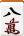
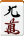
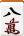
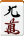
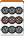
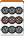
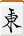

基本使用器材
在我們解釋麻將要怎麼玩之前，首先我們先來談談玩麻將需要準備哪些東西。基本上，就算再怎麼簡略，玩麻將也需要一張桌子、一整副麻將牌跟一對骰子，而點棒和起家標示等等在比較不正式的遊戲中都可以省略不用，但是稍微準備一下會更好。
底下我們大致介紹各種需要的器材。這些東西可以在專業的麻將用品店買到，而比較基本的配備則在比較大的文具行、賣場或雜貨店也有機會買到。
麻將牌
麻將牌是整個麻將遊戲的核心道具，每張牌都是一個小長方體，其中一面為正面，上面有此牌對應的文字或圖案，通常會將該文字或圖案刻凹並加以上色。與正面相對的為背面，通常是不具任何意義的紋路或單純的素色；而早期亦經常用竹做成背面，但是近來真正的竹背牌較少見。
日本麻將所使用的牌一共有 34 種，分成數牌和字牌兩大類；其中數牌又有萬子、筒子和索子三種，而字牌則分成風牌與三元牌，每張牌的圖案分別如下所示：
萬子：


 



筒子：


 

索子：


風牌：


三元牌：


萬子的每一張牌從左到右就分別叫作一萬、二萬、……、九萬，類似地筒子和索子每張牌的名稱就是一筒到九筒、一索到九索。值得注意的是一索的圖案通常是畫成一隻鳥的樣子，關於為什麼特別這樣畫有各種說法，這邊先不詳述了。另外注意到五萬通常在牌面上是寫成「伍萬」。
四張風牌東風、南風、西風、北風分別對應於參與麻將遊戲的四個玩家，這個稍後會有更多說明。三張三元牌分別叫做白板、青發（或綠發）、紅中，簡稱為白、發、中。
數牌當中的一跟九共六種合稱為老頭牌、其餘的二到八合稱為中張牌，而老頭牌再加上所有字牌又合稱么九牌。這些術語在後面會用得到。雖然就字面上來說么九牌應該是指「一跟九」，但是實際上這個詞也包含字牌在內；而純粹的「一跟九」則是叫「老頭牌」，應特別注意。
在整副麻將牌當中，以上所介紹的 34 種牌每張各會重複出現四次，因此總計有 136 張牌，這便是日本麻將中所用的所有牌。
骰子（サイコロ，或寫成「賽子」）
骰子是用來決定莊家以及配牌位置的道具。只要充分公正，任何骰子皆可。在日本麻將遊戲中會使用兩顆骰子，擲出 2 到 12 的點數以決定一些事情，這個在後面會詳細說明。
點棒（点棒）
日本麻將遊戲進行的過程中需要持續記錄每一個人的點數，以便在最後決定勝負，而標準的記錄道具就是點棒。點棒是一種長條狀的小棒子，一共有四種，如下圖所示，從左到右分別表示百點、千點、五千點和萬點（萬點的點棒繪製可能會略有差異）。也有五百點的點棒，不過那相當少見（通常是攜帶式麻將才會使用），而且造型也不盡相同。
一套完整的點棒應會有萬點 4 枝、五千點 8 枝、一千點 36 枝、百點 40 枝，合計有 120000 點，可以滿足多數規則版本的需求。傳統的點棒是如圖所示白色棒子上刻畫上紅點或黑點，而近來也有一些點棒是四種各有不同的顏色。
雖然點棒在國內比較少見，不過在一些麻將用品店可以買到。強烈建議各位想玩日本麻將的朋友一定要準備一套點棒，玩起來的感覺跟用尋常的籌碼真的有很大的不同！
起家標記（起家マーク）
用來標示遊戲是從那個玩家開始的，這個玩家又被稱為起家。通常這個道具也順便標示出現在的場風（見後文）。日本麻將常用的起家標記是一個單純的平板，一面寫著東、一面寫著南，但光是這樣在進入到西場的時候會有點不方便。國內一般能買到的標記稱為方向環，是一個六面分別寫著「東南西北中發」的骰子狀物放在一個圓環當中，這樣的道具提供了比較多的可能性，使用起來挺方便的。
麻將桌（麻雀卓）
所謂的麻將桌大致就是一個普通的方桌，主要的差別在於麻將桌的外圍有方框、可以避免洗牌的時候牌飛出去，並且可以幫助玩家整理手牌和方便堆牌。另外一個特色就是有抽屜或格子可以放置點棒（略為高級的麻將桌會進一步將抽屜分成四格，以便分開放置四種點棒）。通常麻將桌上會鋪上一層絨質的墊布，可以增進打牌的觸感並稍微降低噪音。
以國內行情來說大概只要不到一副麻將牌的錢就可以買到還算不錯的麻將桌和墊布，在國內普及率相當高。
其他非必備品
麻將尺
俗稱牌尺。這並非麻將的必備用品，不過可以幫助一些抓牌技巧尚未純熟的玩家堆牌和整理手牌，也可以幫助堆牌的時候避免堆錯張數。簡單地說麻將尺就是一把長尺，材質有塑膠、木製或竹製等等。只要將麻將尺倚靠在牌上就可以達到整理或者幫助抓牌的效果。然而熟練的玩家可以只用桌框就做到完全相同的事情。
國內購買麻將尺的時候經常是四枝一組，其中常有一枝顏色不同，這也可以用來標示起家。
燒鳥標記（焼き鳥マーク）
這是只有在玩燒鳥規則的時候才需要的，用途是用來標示出目前還有誰沒有胡過牌。燒鳥標記是一個畫有烤鳥串的小平板，四個玩家各有一個放在桌上，等到胡過一次牌之後就可以收起來。
祝儀（チップ）
這是只有在玩祝儀規則的時候才需要的。
祝儀即為長得和籌碼一樣的小圓板。祝儀跟點棒是分開來使用的東西。
自動麻將桌
自動麻將桌是一種高級的桌子，能夠全自動地進行洗牌和堆牌（見後文）的動作。自動麻將桌的原理是利用兩副牌交替使用，當一局結束、將牌推入桌子中央打開的洞口之後，另外一副事先堆好的牌就會自動升起，同時將剛才推入洞口的牌洗牌並堆好預備下一次的使用。自動麻將桌必須使用特殊的磁性牌才能正常運作，通常在購買桌子的時候就會一併附上兩副這樣的牌。
除了有自動洗牌和堆牌的功能外，許多日本製的高級自動麻將桌還兼具計算點數的功能。
自動麻將桌除了可以讓遊戲更快速進行外，還有預防各種堆牌作弊（見後文）的功效，但是它的價格並不便宜。一台自動麻將桌少說都要好幾萬元。
除了上述這種全自動麻將桌以外，現在還有一種所謂的「半自動麻將桌」，這種桌子沒有自動堆牌的功能，但是只要按下按鈕，就可以利用磁力將桌上的牌大致變成面朝下的狀態並稍微洗亂，這會稍微帶來一些便利。當然這種桌子也是要搭配專用牌才行。